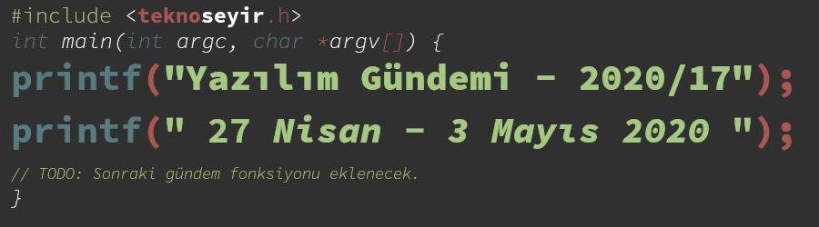
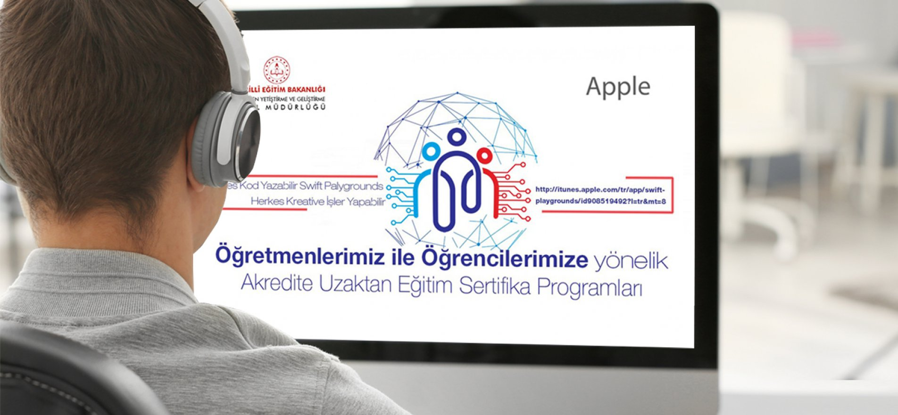
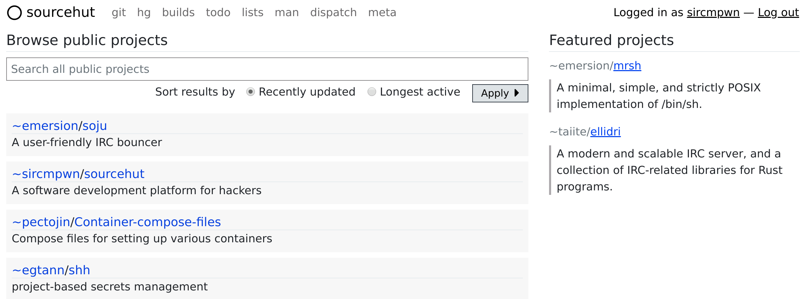

Yazılım Gündemi - 2020/17
27 Nisan - 3 Mayıs 2020
İçindekiler
- 1. Lise öğrencilerine yönelik uluslararası yazılım eğitimleri erişime açıldı
- 2. Visual Studio Online hayatına artık Visual Studio Codespaces olarak devam edecek
- 3. Microsoft, Rust/WinRT ön izleme sürümünü tanıttı
- 4. Chrome Web Store, Geliştirici Programı Politikalarını güncelledi
- 5. TypeScript 3.9 RC sürümü yayınlandı
- 6. SourceHut project hub duyuruldu
- 7. Yaklaşan Online Etkinlikler #EvdeKal
- 8. Diğer Haberler
- 9. Lisans

< Önceki Gündem | 27 Nisan - 3 Mayıs 2020 | Sonraki Gündem >
1 Lise öğrencilerine yönelik uluslararası yazılım eğitimleri erişime açıldı

Milli Eğitim Bakanlığının web sitesinde bugün yayınlanan duyuruya göre zaten öğretmenler için devam etmekte olan bazı yazılım geliştirme eğitimleri, lise öğrencileri için de erişime açılmış.
"Öğrencilerimiz için başlatılan bu eğitimlere, Android mobil uygulama geliştirmek için gerekli teorik bilgiler ile programlama dillerini öğrenecekleri ve bol bol pratik yaparak eğlenceli ve öğretici uygulamalar yazacakları üç yeni eğitim daha eklendi." bilgisini veren Selçuk, şunları kaydetti: "Google iş birliğinde 'Flutter ile Yazılım Geliştirme' ve 'Kotlin ile Yazılım Geliştirme' android uygulama eğitimleri, Öğretmen Yetiştirme ve Geliştirme Genel Müdürlüğü Youtube kanalı üzerinden tüm öğrenci ve öğretmenlerin erişimine açıldı. Google ve Cisco iş birliğinde hazırlanan bu programlarla öğrencilerin mobil uygulama oluşturma, yapay zeka, gömülü sistemler, robotik, big data konusundaki bilgi ve becerilerinin artırılmasını hedefliyoruz."
Öğretmen Yetiştirme ve Geliştirme Genel Müdürlüğünün YouTube Kanalındaki yazılım geliştirme videolarını içeren oynatma listelerine aşağıdaki bağlantılardan ulaşabilirsiniz:
Ayrıca Cisco tarafından sertifikalı öğretmenler de Python programlama dili için eğitimler verecekmiş fakat ilgili YouTube kanalında o eğitimleri bulamadım. Sanırım henüz yayınlanmamış.
"Delphi eğitimi" olayın sonra (bkz: Yazılım Gündemi - 2020/04) bence güzel bir gelişme bu. Elbette sadece internet üzerinden videolarla olacak iş değil, farklı eğitimsel içeriklerle ve pratiklerle de desteklenmeli ama başlangıç için güzel bir adım. Video sayıları henüz az gözüküyor ama anladığım kadarıyla hepsini birden paylaşmamışlar, her güne ayrı video şeklinde yayınlıyorlar. İlgili arkadaşlar yukarıdaki bağlantıları takip edebilirler ya da çevresindeki lise öğrencilerine tavsiye edebilirler.
2 Visual Studio Online hayatına artık Visual Studio Codespaces olarak devam edecek
Geçtiğimiz senenin yazılım gündemi yazılarının birinde (bkz: Yazılım Gündemi - 17) Microsoft'un "Cloud Geliştirme" çözümü olan Visual Studio Online'ın tanıtıldığından bahsetmiştim. "Cloud Geliştirme" ortamları giderek daha da popülerleşirken Microsoft'da bu hizmetinin ismini değiştirdi ve fiyatlarını da aşağıya çekti.
Kasım ayından bu yana Microsoft aldığı geri bildirimlerle birlikte çoğu kişinin yüksek özellikli geliştirme ortamlarına ihtiyaç duymadığını öğrenmişler ve hizmetlerine yeni bir paket eklemişler: Basic. Bu paketde 2 sanal çekirdek, 4GB RAM ve 64GB SSD bulunuyor. Benim de üzerinde çalıştığım çoğu proje için yeterli bir paket fakat "cloud development" bana pek cazip gelmiyor. Güncellenen fiyat listesi işe şu şekilde:
| Linux instance tipi | Şimdiki fiyatı(*) | Yeni Fiyat(*) |
|---|---|---|
| Basic (2 çekirdek, 4GB RAM | $0.24 | $0.08 |
| Standard (4 çekirdek, 8GB RAM) | $0.45 | $0.17 |
| Premium (8 çekirdek, 16GB RAM) | $0.87 | $0.34 |
Fakat yeni fiyatlar hemen yürülüğe girmiyor. Microsoft'un 19 Mayıs'da düzenleyeceği sanal Build 2020 etkinliğinden sonra yeni fiyatlarla kullanılmaya devam edilebilecek.
Sıkça soruyorum ama konusu açılmışken yine sorayım: Geliştirme ortamınızı "cloud development" olarak güncellemeyi düşünüyor musunuz? "Cloud Development" olayına bakışınız nasıl? Yorumlar bölümünde konuşalım.
3 Microsoft, Rust/WinRT ön izleme sürümünü tanıttı
Geçtiğimiz yazılım gündemi yazılarında detaylıca değindiğim konular arasında olmasa da Microsoft'un Rust programlama diline olan ilgiliyle alakalı haberleri "Diğer Haberler" bölümü altında paylaşmıştım. Rust, Mozilla tarafından geliştirilen güvenlik ve performans odaklı bir programla dili ve popülaritesi de gün geçtikçe artmaya devam ediyor. Bu hafta ise Microsoft, Windows için Rust ile uygulama geliştirmeye yarayan WinRT kütüphanesinin ön izleme sürümünü GitHub üzerinde açık kaynak olarak paylaştı.
Şu anda güncel olarak C++/WinRT üzerinde desteklenen tüm API'ler Rust/WinRT üzerinde de destekleniyor ve kullanılabiliyor. Yani artık Rust ile Windows üzerinde masaüstü uygulamalardan, cihaz sürücülerine (driver) kadar birçok tipte yazılımı geliştirebileceğiz. Microsoft'da örnek olması açısından Rust ile bir mayın tarlası uygulaması geliştirmiş ve GitHub üzerinde kodlarını paylaşmış.
Henüz gerçek uygulamalarda kullanmak için çok erken bir ön izleme sürümü fakat yeni denizlere açılmayı seven geliştirici arkadaşların ilgisine sunmuş olayım. Konu hakkında daha detaylı bilgi ve örnekler için konu başlığına eklediğim bağlantıya tıklayabilirsiniz.
Ayrıca Microsoft'un Rust'a olan ilgisi de devam edecek gibi gözüküyor. Çünkü Azure takımı da Rust dilini WebAssembly ile birlikte Kubernetes üzerinde test ediyormuş. Önümüzdeki süreçlerde Microsoft'un Rust'a olan ilgisinin ne kadar süreceğini hep birlikte göreceğiz.
4 Chrome Web Store, Geliştirici Programı Politikalarını güncelledi
Google tarafından geliştirilen Chrome web tarayıcısının eklenti mağazası olan Web Store'da eklenti yayınlarken geçerli olan kurallar bu hafta içerisinde güncellendi.
Google, yollanan her eklentiyi markete eklemeden önce denetimden geçiriyor. Güvenlik vb. gibi konular düşünüldüğünde bu çok da normal bir süreç aslında fakat bazı geliştiriciler sürekli birbirinin benzeri uygulamaları göndererek bu süreç içerisindeki diğer eklentilerin incelenme sürelerini uzatıyorlarmış. Yani siz bir eklenti yapıp bunu markete ekletmek istediğinizde bunun için beklemeniz gereken süre uzuyor. Bu durumun önüne geçmek için Google'da politikalarını değiştirmeye yoluna gidiyor. Politikalardaki güncellemeler şu şekilde:
- Birbirinin aynısı deneyimleri ve fonksiyonları olan eklentiler artık yayınlanmayacak.
- Yanıltıcı, yanlış biçimlendirilmiş, açıklayıcı olmayan, alakasız, aşırı veya uyumsuz meta bilgileri olan eklentiler fakat bunlar sadece eklentinin açıklamasını kapsamıyor aynı zamanda eklentinin ismi, başlığı, ikonu, ekran görüntüleri ve promosyon görüntüleri de bu kurallara uymak zorunda.
- Geliştiriciler Chrome Web Store'daki eklentilerin sıralamalarını değiştirmeye yönelik hareketlerde bulunamazlar. Sahte incelemeler, eklentiyi otomatik indiren ve puanlayan botlar vb. şeyler.
- Sadece başka bir web sitesini, uygulamayı ya da temayı aktifleştirmeye yarayan eklentiler artık kabul edilmeyecek.
- Kullanıcılara sürekli spam olarak mesajlar, reklamlar, hedefli saldırılar (phishing), promosyon gönderen eklentiler yayınlanmayacak.
Bu yeni politikların uygulanmasına 27 Ağustos 2020 tarihinde başlanacakmış. Eğer Chrome Web Store'da yayınlanmış bir eklentiniz varsa yeni politikaları ihlal edip etmediğinizi kontrol edin. Zira 27 Ağustos itibariyle bu kurallara uymayan tüm eklentiler marketten kaldırılacaklar.
Daha fazla bilgi için konu başlığına eklediğim bağlantıya ya da Chromium takımının hazırladığı Sıkça Sorulan Sorular sayfasını ziyaret edebilirsiniz.
5 TypeScript 3.9 RC sürümü yayınlandı
Microsoft tarafından geliştirilen, JavaScript'e derlenebilen tipli programlama dilin olan TypeScript, bu hafta içerisinde 3.9 Release Candidate sürümüne kavuştu. Açıkcası uzun bir zamandır front-end teknolojileri ile pek ilgilenmiyorum dolayısıyla bu haberi de "Diğer Haberler" kısmına taşımıştım ki son anda anlayabildiğim bir yeni özellik fark ettim. Hız iyileştirmeleri hakkında zaten fazla bilgi verilmiş, gidip kodları okumak gerekiyor. Editör iyileştirmelerini de programlama dilinin yapısıyla ilgili olmadığı için almadım. Öyleyse anladığım özelliği aktarayım size :).
5.1 // @ts-expect-error yorum satırı Pull Request Sayfası
TypeScript kullanarak bir kütüphane yazıyor olduğunu düşünün ve şöyle bir fonksiyonunuz var:
function hadiBirSeylerOlsun(abc: string, xyz: string) { assert(typeof abc === "string"); assert(typeof xyz === "string"); // bir şeyler oluyor }
Bu fonksiyon iki tane string türünden değer kabul ediyor, biz TypeScript
ile bu fonksiyonu kullanırken string dışında bir türden değişken
gönderirsek TypeScript hata vererek derlenmeyecek, benzer şekilde bu
fonksiyonu JavaScript tarafında kullanmaya çalışırsak da çeşitli hatalar
görüyoruz. Bu durum için test yazmaya çalıştığımızda ise şöyle bir kod
yazabiliriz:
expect(() => {
hadiBirSeylerOlsun(123, 456);
}).toThrow();
Fakat bu kod TypeScript'de derlenmeyecektir çünkü fonksiyona string dışında
bir değer gönderdik. İşte bu durumun önlemek için fonksiyonumuzun hemen üst
satırına // @ts-expect-error yorum satırını ekliyoruz ve artık TypeScript
derleyicisi bu fonksiyonun çalıştırılmasıyla bir hata beklendiğini anlayacak
ve bu satırın tip kontrolünü atlayacak.
Bu iş için daha önceden ts-ignore ifadesi kullanılıyormuş sanırım fakat
bazı durumlarda soruna yol açabildiği için bu özel durum için özel bir yorum
satırı işaretleyicisi oluşturmuşlar.
TypeScript 3.9 Release Candidate sürümü ile birlikte gelen diğer özellikler ve değişiklikler için konu başlığına eklediğim bağlantıya tıklayabilirsiniz.
6 SourceHut project hub duyuruldu
SourceHut, tıpkı diğer uzak git sunucuları (GitHub, GitLab vb.) gibi size git depolarınızı uzak bir sunucuda tutma imkanı veren bir web sitesi. Tabii ki artık modern yazılım geliştirme süreçlerinin birer parçası olan CI (Continuous Integration), proje yönetimi (issue takibi vb.), wiki, kod inceleme (code review) gibi farklı sorunlara da çözüm üreten servisleri mevcut. Yalnız SourceHut'ın diğerlerinden farklı bir yani var: sitede JavaScript kullanılmıyor, her şey sunucu tarafında çalışıyor. Ayrıca %100 açık kaynak ve özgür yazılım olarak bir kişi tarafından geliştiriliyor. İlk yazılım gündemi yazısında bu siteye gelen bir özellikten bahsetmiştim ve benim de çok beğendiğim bir servis olduğu için ne zamandır tekrar gündemde değinmek için bahane arıyordum :).
SourceHut bu hafta içerisinde "project hub" ismini verdiği yeni servisini
duyurdu. Bu yeni servisin ne işe yaradığını anlamak için öncesince
SourceHut'ın arkasındaki UNIX felsefesini bilmek gerek. GNU/Linux
kullananların da aşina olduğu üzere işletim sistemiyle birlikte gelen
araçların çoğu "sadece bir şeyi yap ama en iyi yap" anlayışıyla geliştirilmiş
araçlardır. Dolayısıyla elinizin altında birbiriyle kombinleyebileceğiniz bir
sürü araç olmuş oluyor. Örneğin cat komutu sadece bir dosyanın içeriğini
yazdırmaya yararken, grep komutu bir dosya içerisinde metin arama gibi
işlemleri yapabiliyor. İşte SourceHut da bu yaklaşımla geliştiriliyor. Sadece
bir işi en iyi şekilde yapmaya çalışan birçok alt servis var. Git depolarınızı
barındırmak için git.sr.ht, issue takibi vb. işler için todo.sr.ht, CI
işlemleri için builds.sr.ht vb. birçok alt servis bulunmakta. Hepsini görmek
için sourcehut.org adresini ziyaret edebilirsiniz.
Yani oluşturduğunuz bir git deposu sadece git deposu olma işini yapıyor. Issue takip vb. diğer işler için diğer alt servislerden oluşturmanız gerekiyor. İşte "project hub" ise bütün bu alt servisleri GitHub ve GitLab'dan alıştığımız gibi tek bir sayfada birleştiriyor. Fakat yanlış anlaşılmasın bu alt servisler birleşip tek hale gelmiyor, sadece bir projeye ait tüm alt kaynaklar bir sayfada toplanıyor, isterseniz tıklayarak o alt servisteki işlemlerinize gidebiliyorsunuz. Üstelik bir projeye istediğiniz kadar alt servis ekleyebiliyorsunuz, mesela bir uygulamanın Android ve iOS sürümlerini ayrı ayrı git depolarında tutuyorsanız onları da tek bir projeye ekleyebiliyorsunuz.

Şekil 3: Örnek için SourceHut'ın tüm alt servisleriyle birlikte kodlarını barındıran bu proje sayfasını ziyaret edebilirsiniz.
SourceHut dışından gelenler için böyle bir sayfanın olması çok önemliydi ve sonunda eklediler. Siz de benim gibi UNIX felsefesinden hoşlanan ve GNU/Linux araçları gibi basit ve sade araçları kullanmayı seviyorsanız mutlaka SourceHut'a bir göz atın. Ayrıca tek kişi tarafından geliştirildiğini aklınıza getirerek bağış yapmayı da düşünebilirsiniz.
7 Yaklaşan Online Etkinlikler #EvdeKal
| Etkinlik İsmi | Tarihi |
|---|---|
| Açık Seminer 14. Gün: NLP 101: Doğal Dil İşlemeye Giriş | 5 Mayıs 14:00 |
| Network Üzerinden Tehdit Avcılığı - Komuta Kontrol | 5 Mayıs 16:30 |
| Açık Seminer 15. Gün: Bankacılık & Finans Alanında Doğal Dil İşleme | 6 Mayıs 14:00 |
| AWS Bulut Altyapısı Bileşenleri | 6 Mayıs 23:00 |
| Siber Koruma Çözümleri Webinarı | 7 Mayıs 14:00 |
| Açık Seminer 16. Gün: Bilişsel Hizmetler ile Türkçe Chatbot | 7 Mayıs 14:00 |
| High Available Kubernetes clusters with KOPS | 7 Mayıs 22:00 |
| Açık Seminer 17. Gün: Doğal Dil İşleme Ürünleri ve Kullanım Alanları | 8 Mayıs 14:00 |
| .NET Core gRPC Servislerini Tarayıcı Uygulamalarından Tüketmek | 8 Mayıs 22:00 |
| React Native vs. Flutter | 9 Mayıs 22:00 |
| Bulutta ve kendi sunucularınızda Kubernetes | 9 Mayıs 23:00 |
| Kubernetes Hands-On no.2: What is deployment, pod and service? | 10 Mayıs 13:30 |
8 Diğer Haberler
- JetBrains Academy, COVID-19 pandemisi boyunca ücretsiz oldu.
- Facebook Yapay Zeka takımı chat botlarıyla ilgili detaylı blog yazısı yayınladı.
- Microsoft, yeni bir meta programlama aracı tanıttı: C# Source Generators.
- DigitalOcean özel ağlar için yeni hizmetini duyurdu: Virtual Private Cloud.
- Google Cloud, yeni metadata yönetim servisini genel erişilebilir yaptı: Data Catalog
- Determined AI, derin öğrenme platformunu açık kaynak hale getirdi. GitHub Deposu
- JetBrains, WebStorm IDE'sinin 2020.1.1 sürümünü yayınladı.
- Yeni bir API tasarlama aracı açık kaynak olarak duyuruldu: Insomnia Designer. GitHub Deposu
- Amazon Web Services yeni veri merkezini açtı: Europe (Milan).
- OpenCL 3.0 sürümü yayınlandı.
- Redis 6.0.0 sürümü yayınlandı.
- Açık kaynak proje yönetim sistemi Leantime v2.1 sürümünü yayınladı.
- VueJS v3.0.0 Beta 7 sürümü yayınlandı.
- D programlama dilinin 2.092.0 Beta sürümü yayınlandı.
- AMD Programcı Kılavuzu güncellendi.
- TypeScript için fonksiyonel programlama kütüphanesi Pruify, v0.15 sürümünü yayınladı. GitHub Deposu
- Microsoft, Shader Conductor 0.3 sürümünü yayınladı. GitHub Deposu
- XMake v2.3.3 sürümü yayınlandı. GitHub Deposu
- odo v1.2.0 sürümü yayınlandı.
- NeutralinoJS v1.4.0 yayınlandı.
9 Lisans

Yazılım Gündemi - 2020/17 yazısı Eren Hatırnaz tarafından Creative Commons Atıf-GayriTicari-AynıLisanslaPaylaş 4.0 Uluslararası Lisansı (CC BY-NC-SA 4.0) ile lisanslanmıştır.